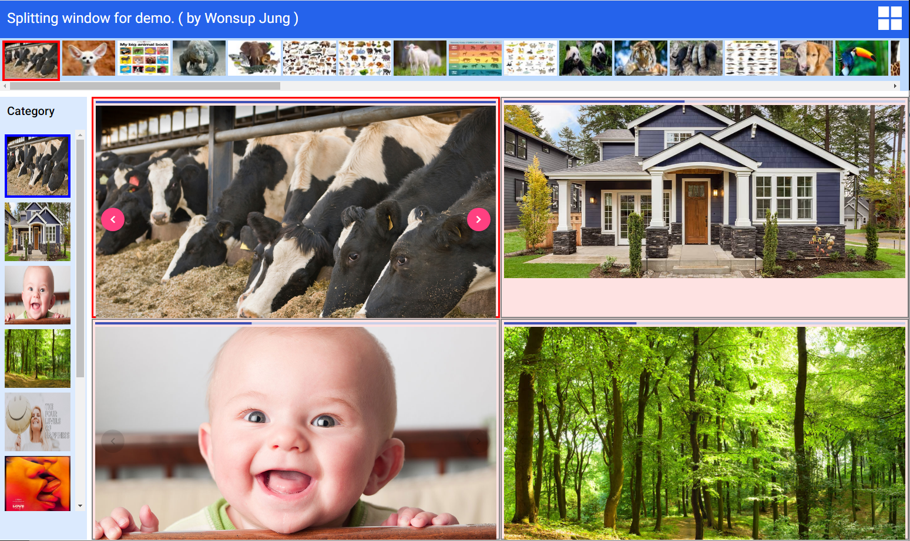

Split window

demo program : Demo
program source : Source
Summary.
- 구글에서 이미지 구릅별로 crawling 하여 이미지의 url을 저장한 화일을 미리 만들어,
이 화일에 있는 이미지 url로 실시간으로 이미지를 읽어온다.
- 백엔드 서버가 별도로 있는 것이 아니어서, 이미지 서버의 상태와 이미지서버와 관련된
traffic의 상황에 따라서 이미지별로 로딩 속도가 현저히 차이가 날 수 있다.
- 이미지를 여러 구룹(category)으로 구분하여 구룹별로 읽어오는데, 이미지를 로딩하는 시간이
많이 걸리므로, 이것을 보완하기 위하여 `webworker`기술을 적용하였다.
- 그리고, 한번 읽어들이 이미지는 나중에 빠르게 전시하기 위해서 cache를 적용하여 저장한다.
- 사용자가 하나의 그룹(category)을 선택했다가, 이미지가 caching중에, 다른 그룹을
선택하는 경우를 고려하여 webworker가 이미지 로딩중에 다른 구룹 선택이 되면,
바로 다른 그룹으로 바꾸어서 image loading이 가능하게 구현했다.
Caching image
- 사용자가 random하게 이미지 그룹을 선택할 수 있으므로 하나의 cache에 모든 그룹의
이미지를 읽어오는 순서와 상관없이 저장하고,
- 그룹별 이미지를 전시할 때 해당 그룹만 선별하여 전시하도록 구현했다.
- 이때 그룹별로 선별하는 작업에 시간이 많이 소요되므로 webworker를 사용하여
그룹별로 선별하는 작업을 진행하도록 했다.
- 사용자가 그룹을 선택할 때 그 그룹에 대해서 이미 caching 된 것이 있으면
그것을 전시하고, 그 그룹에서 아직 다 로딩하지 못한 것이 있으면
그것들을 읽어서 전시하는 동시에 caching 작업도 진행한다.
Split window
- window split 기능은 기존의 라이브러리를 사용해도 되는데,
그렇게 되면 customizing이 어렵기 때문에 별도로 directive를 적용하여
구현했다.
- split window 구현 시, 여러개의 window가 각각의 이미지 그룹을 표시하는 과정을
거치므로, 이때는 각 window에서 첫번째 이미지만 전시하고 전시가 끝나면 바로
다음 window을 바톤을 넘겨서 진행하는 방향으로 했다.
- 이런 과정을 거쳐야만 각각의 window가 각각 고유의 id를 유지할 수 있으므로
window별로 통제가 가능하다.
주요적용기술
- Angular: ver 12.2.0
- Angular Material ( cdk, grid...)
- RxJS: ver 6.5 (Reactive programming library)
- NgXS: (Redux: State Management Library)
- Webworker: Observable-webworker (RxJS oriented webworker)
- TDD: spectator ( Angular oriented TDD development tool)
Ordering Pizza
피자오더 프로그램
실행프로그램 : Demo
소스프로그램 : Source
개요
- 이 프로그램은 이미지 원본은 본인이 디자인한 것이 아니고, Angular로
개발된 샘플프로그램 (Angular source: https://github.com/cypress-io/angular-pizza-creator)을
기본으로 다른 두명의 개발자가 Redux(NgXS), RxJS를 조합하여 개발을 시도하다 중단한 것을
(https://github.com/tommythongnguyen/Ngxs-Pizza-Order)
중요 부분을 수정 완성하고, 토핑을 추가/삭제하는 기능을 추가하는 등 전반적인 기능을 보강 수정한 것입니다.
원래는 DB와 연결되어 동작하지만, 온라인 데모용으로 Redux 기능으로 대신하여 동작합니다.
소스는 체계적으로 쉽게 내용을 파악할 수 있으며 유지보수가 쉽게 구성되어 있습니다.
메뉴설명
- 프로그램에서 Help 버튼으로 설명을 확인함
적용기술
- NgXS: (Angular전용 Redux) : Redux를 적용하여 프로그램의 각 모듈의 상태 변화를 한 곳에서
nbsp;관리하므로 상태관리를 쉽게 할 수 있고 기능 확장 및 유비보수가 용이함.
- Angular Material : 기본적인 Component (button, input, card 등)와 Table을 적용하였음
- Angular Cdk : Angular Cdk Overlay 기술로 선택된 토핑을 표현하는 구현함.
Overlay 기능으로, 배경에 있는 데이터에 영향을 주지 않고 데이터 표현이 가능함.
- RxJS : 프로그램의 주요 함수는 전부 RxJS를 적용하여 생산성 및 유지보수성을 향상하였음.
- Angular Animation : Angular Animation 기능을 적용하여 피자도우에 토핑이 올려지는 모습
구현을 생동감 있게 구현함.(원본에 구현 되었던 내용)
프로그램 소스 설명
pizza-display ; 피자 도우에 토핑을 에니메이션 표시하는 컴퍼넌트.
pizza-form: 피자를 생성, 추가, 삭제를 하거나 토핑을 선택하여 저장하는 작업을 수행하는 컴퍼넌트.
pizza-item: 데시보드(홈 메뉴)에 피자를 표시하는 컴퍼넌트.
pizza-toppings: 피자의 토핑을 선택하는 기능. 선택한 결과를 pizza-form에 전달함
---------
Selected-item: 선택한 토핑을 표시하고, 토핑이 추가, 제거될 때 마다 변동하는 가격을 계산하믄 컴퍼넌트
product-item.componet: 데시보드에 나열된 피자를 선택하는 경우 별개로 표시 하는 컴퍼넌트.
product.component: 생성된 피자를, 데시보드(홈 메뉴)에 나열하는 부분
XXX 프로젝트 (심사상세 모듈) 프로그램
실행프로그램 : Demo
소스프로그램 : Source
- 개요.
이 프로그램은 모 은행에서 프로젝트 시행중인 수출입물품제재(미국의 적대국가에
수출입을 못하도록 제한을 목적으로 함)기능으로, 수출입 문서가 OCR(Optical Character Recognition)
문서의 이미지 형태의 데이터에서 AI 기술 적용으로 이미지에 포함된 글자를 판독한 결과를 조회, 수정,
수/출입 제재항목 심사, 심사내용 결재 등의 핵심기능 수행하는 프로그램.
실제 데이터가 없으므로 가상의 데이터로 원래의 테이블을 기능을 구현하고 테이블에서 분석하는 프로그램을 호출하도록 구현하였습니다.
- 메뉴 설명
a. 에니메이션
- 프로그램에서 Help 버튼으로 설명을 확인함.
b. OCR 분석 프로그램
- 프로그램에서 Help 버튼으로 설명을 확인함
-
적용기술
- Angular Element : 적용하여 실제 실행되는 프로그램이 한 개의 JavaScript( xxx.js file)
로 생성되어 필요한 프로젝트에서 바로 JavaScript Component처럼 적용할 수 있도록 개발함.
- 이 파일을 적용하는 프로젝트는 이 파일의 input/output, property, event 정보를
참조하여 바로 적용(Embed)할 수 있음.
- Angular Material : 기본적인 Component (button, input, card 등)와 Table을 적용하였음
- Angular Animation : Angular Animation 기능을 적용하여 Table 데이터를 생동감 있게 표현함.
- RxJS : 프로그램의 주요 함수는 전부 RxJS를 적용하여 생산성 및 유지보수성을 향상하였음.
- Angular Cdk를 적용하여 Help Message를 Overlay 기법으로 표현함. 백그라운드에 있는
HTMLElement에는 영향을 주지않고 자연스럽게 데이터를 원하는 위치에 표시함.
- 프로그램 소스 설명
컴포넌트 설계 구조
 -------------
-------------

- ocr-dialog 컴포넌트가 메인 보드가 됨.
- htabs가 상위 부분에 배치되고.
- vtabs가 바로 밑에서 vtab, image-board와 양분되어 배치됨.
- ocr-zoom-panel, s-rule-panel은 image-board 안부분에 좌측과 우측의 배치됨.
- ocr-zoom-panel: 이미지를 조작(확대, 축소) 및 이미지에 마킹하는 컴포넌트 포함됨.
- s-rule-panel: 제재항목을 표시하고, 잘 못 판독된 데이터를 입력하는 컴포넌트 포함됨